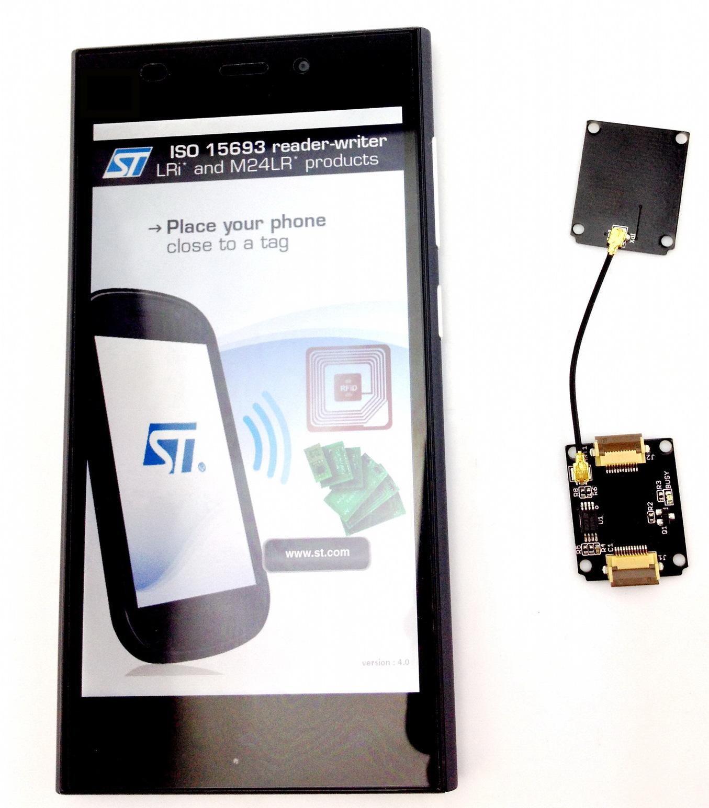
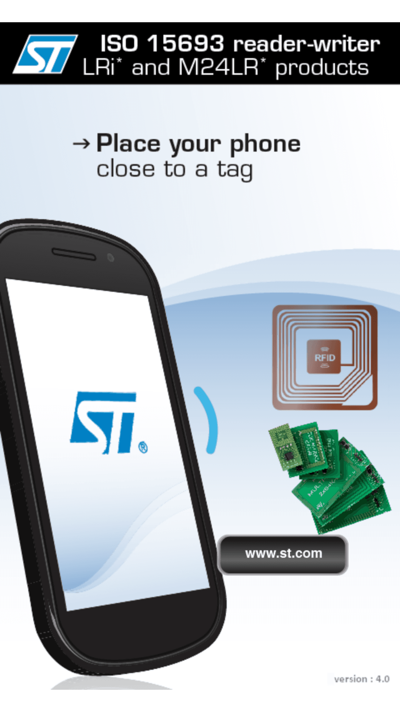
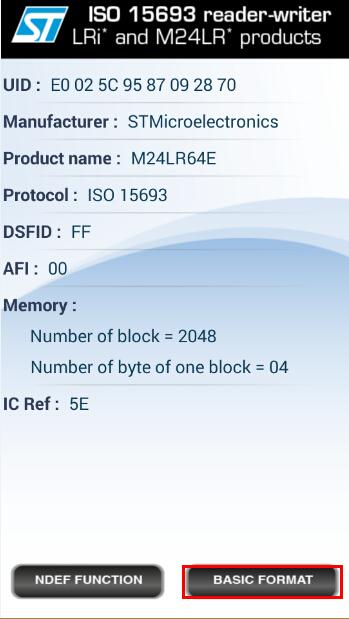
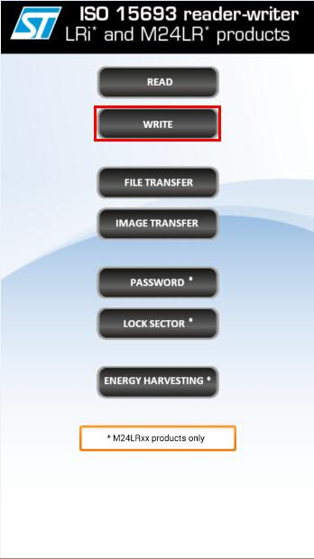
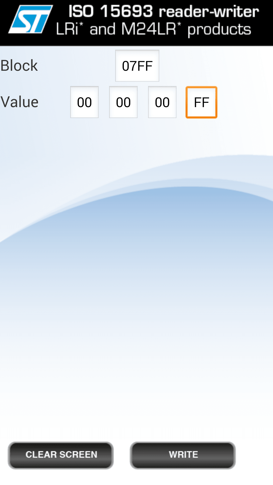

Xadow - NFC Tag is a highly integrated Near Field Communication Tag module, this module is I2C interface, which base on M24LR64E-R,M24LR64E-R have a 64-bit unique identifier and 64 -Kbit EEPROM.Xadow - NFC Tag attach an independent PCB antenna which can easily stretch out of any enclosure you use, leaving more room for you to design the exterior of your project.

3.Place your phone close to a tag.




#include "NfcTag.h" #include <Wire.h> NfcTag nfcTag; int led = 5; bool flag = false; bool preFlag = false; void setup(){ Serial.begin(9600); pinMode(led,OUTPUT); nfcTag.init(); } void loop(){ flag = nfcTag.readByte(EEPROM_I2C_LENGTH-1) == 0xff?true:false; if(flag != preFlag){ Serial.println("get remote NFC control signal!"); if(flag == true){ Serial.println("led will light up!"); digitalWrite(led,HIGH); }else{ Serial.println("led will turn dark!"); digitalWrite(led,LOW); } preFlag = flag; } delay(5*1000); }